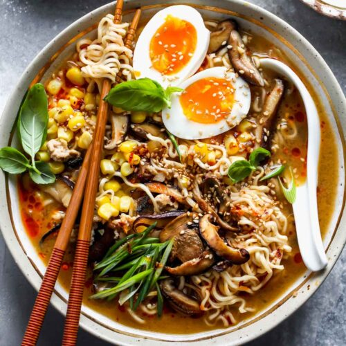

Ramen with teriyaki chicken

With the busy spring season here, quick and easy one pot meals are a lifesaver during the busy week. My family is
crazy about any dish with teriyaki sauce so we are always trying to incorporate those sweet and savory
Asian-inspired flavors into any meal we can
Ingredients
For the broth:
- 1 rotisserie chicken
- 1 tablespoon olive or vegetable oil
- 4 cloves garlic minced
- 1 tablespoon grated
- 1 tablespoon grated fresh ginger
- 4 cups gluten free chicken broth
- 2 cups of water
- Kosher or fine sea salt and pepper to Taste
- 1/3 cup teriyaki sauce
- 10 ounces gluten-free ramen noodles
Toppings:
- Ramen eggs
- Sliced peppers
- Sliced shiitake mushrooms
- Sliced green onions
- Sauteed bonk choy or kale
- Siracha sauce
Preparation
- Prepare the ramen eggs ahead of time, if using.
- Shred the meat and set aside, reserving the skin and bones.
- Heat the oil in a large Dutch oven or stock pot over medium heat. Add the garlic and ginger and cook,
stirring, for about 1 minute or until fragrant. Add the chicken broth, water, San-J Tamari Soy Sauce, and
mirin along with the chicken bones and skin. Bring to a boil. Reduce heat and simmer uncovered for 20-30
minutes. Strain the broth, season to taste with salt and pepper and keep warm.
- Place the chicken in a large skillet with the teriyaki sauce and heat over medium heat until heated through
and the sauce is absorbed, about 5 minutes.
- Cook the ramen noodles according to the package directions.
- To serve, divide the noodles among 4 large bowls and ladle the broth over. Top as desired and eat.
Go back to Principal Menu